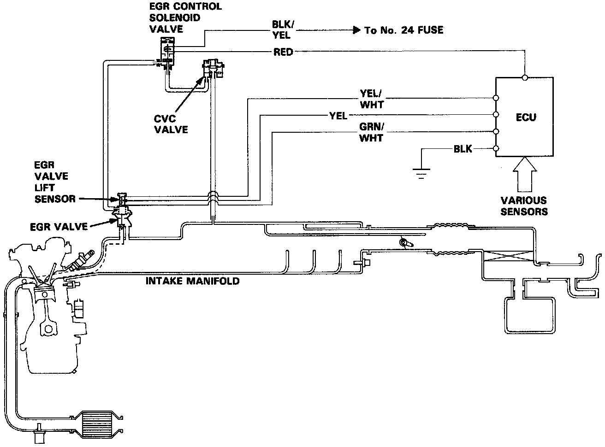
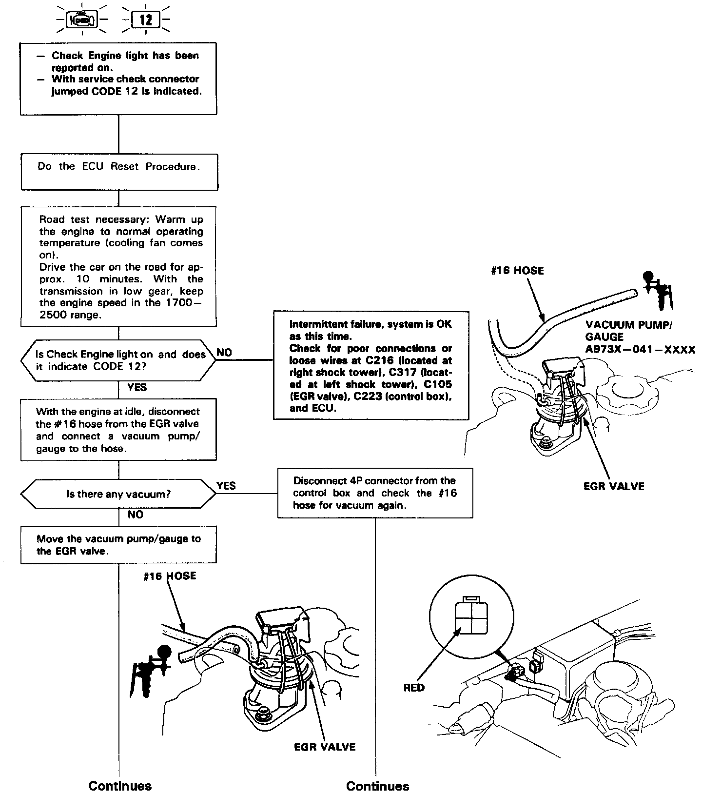
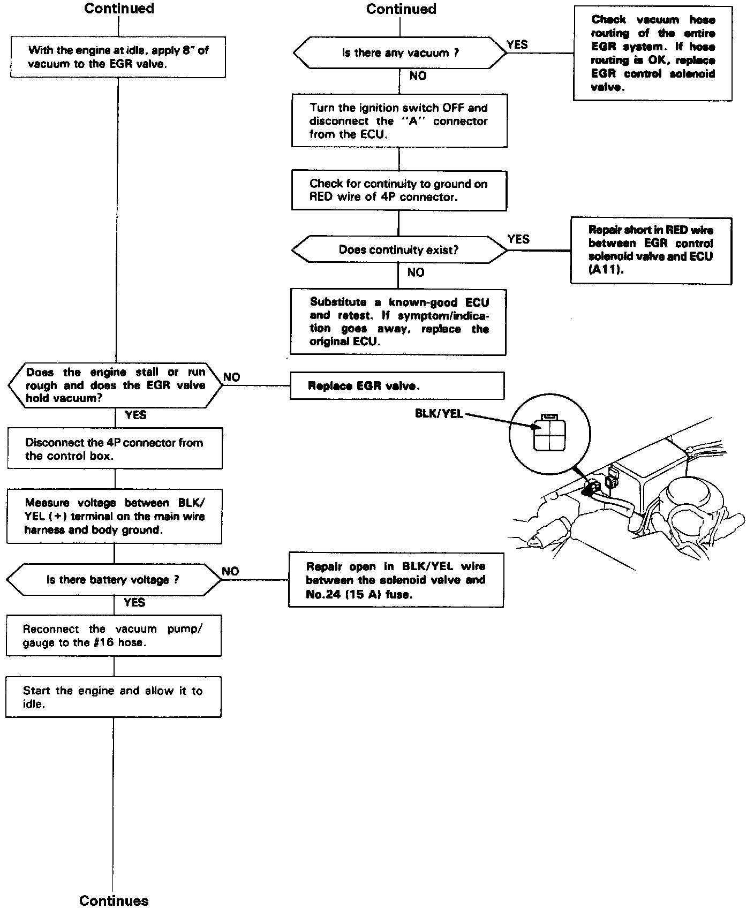
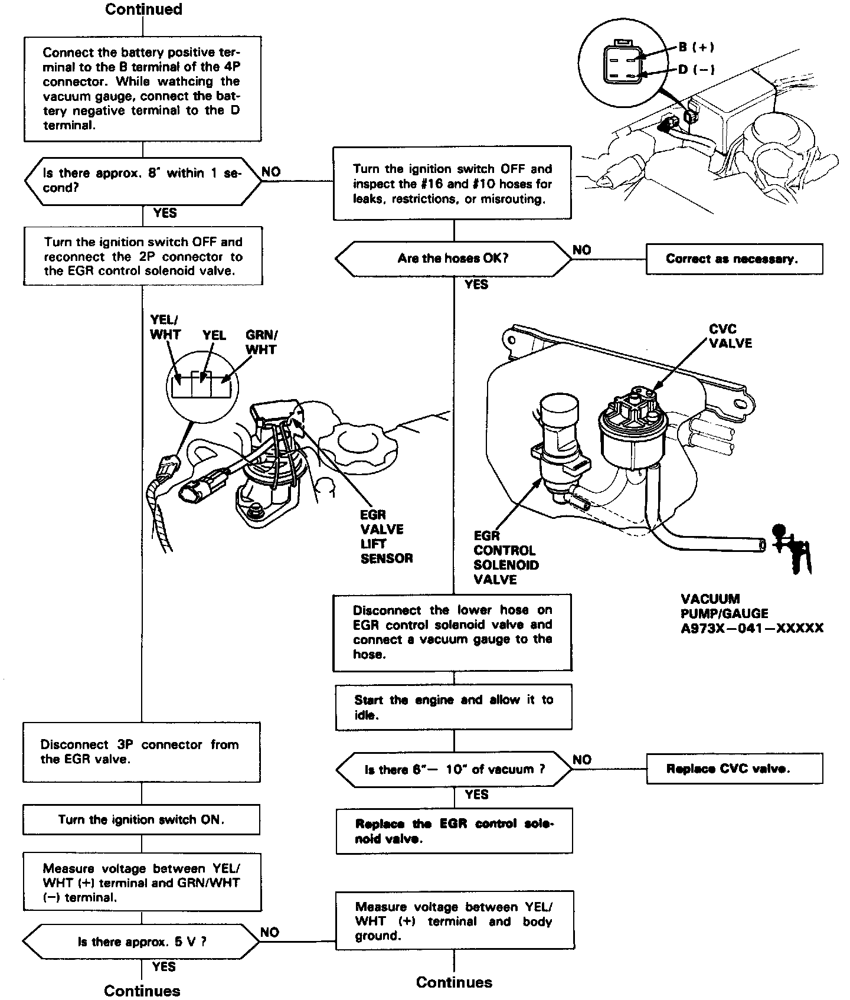
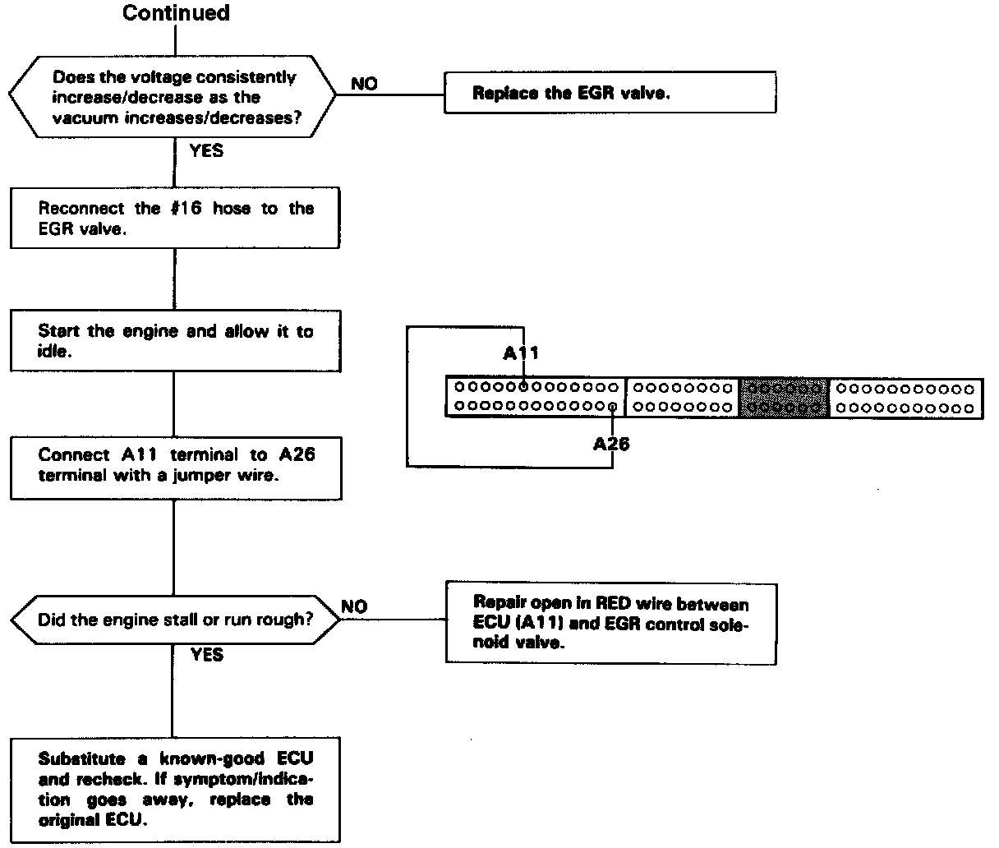

DTC 12





EGR System (B18B1 A/T Only) Troubleshooting Flowchart
Self diagnosis Check Engine light indicates code 12: A problem in the Exhaust Gas Recirculation (EGR) system.
The EGR System is designed to reduce oxides of nitrogen emissions (NOx) by recirculating exhaust gas through the EGR valve and the intake manifold into the combustion chambers. It is comprised of the EGR valve, CVC valve, EGR control solenoid valve, ECU and various sensors.
The ECU memory contains ideal EGR valve lifts for varying operating conditions. The EGR valve lift sensor detects the amount of EGR valve lift and sends the information to the ECU. The ECU then compares it with the ideal EGR valve lift which is determined by signals sent from the other sensors. If there is any difference between the two, the ECU current to the EGR control solenoid valve to further regulate vacuum applied to the EGR valve.